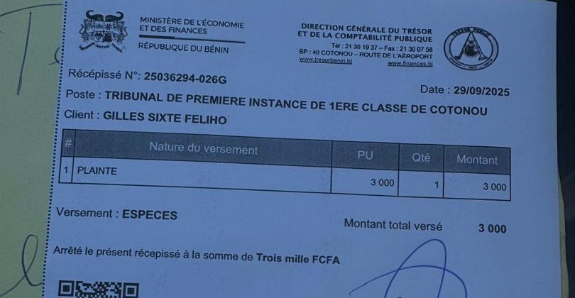

Aucune infraction n'est imputée aux personnes citées : ce film présente une plainte et des pièces publiées. Les qualifications pénales relèvent des juridictions compétentes. Droit de réponse ouvert.
LA VOIE INDIQUÉE,
DÉJÀ EMPRUNTÉE
DÉJÀ EMPRUNTÉE
La plainte avec constitution de partie civile du 29 septembre 2025
3
JUILLET
2025
Classement sans suite (CRIET)
26
SEPT.
2025
Le plaignant en prend connaissance
29
SEPT.
2025
Dépôt de la plainte avec constitution de partie civile
14
JANV.
2026
Lettre du ministre Yvon Détchénou
85 jours
3 jours
107 jours
Depuis le dépôt : aucune suite connue.
LE DÉPÔT
LE RÉCÉPISSÉ DU TRÉSOR PUBLIC

Plainte avec constitution de partie civile, p. 1 : destinataire, objet (coordonnées du plaignant occultées)
Même page : cachet du tribunal de première instance de Cotonou, mention manuscrite non datée

Récépissé n° 25036294-026G, Direction générale du Trésor : « PLAINTE », 3 000 FCFA, en espèces
29 SEPTEMBRE 2025
récépissé : nature « PLAINTE » · 3 000 FCFA
récépissé : nature « PLAINTE » · 3 000 FCFA
CE QUE CITE LA PLAINTE
CE QUI EN DÉCOULE

Plainte, p. 11 : article 85 du Code de procédure pénale, tel que cité ; article 90
Art. 303 du Code pénal : réclusion criminelle à perpétuité
Faux en écriture publique = un crime
Crime : instruction préparatoire obligatoire
Citation directe : non ouverte
Constitution de partie civile (art. 90 et 91) : la voie ouverte
Elle provoque l'information judiciaire lorsque le parquet classe.
Elle provoque l'information judiciaire lorsque le parquet classe.
LES DEMANDES AU DOYEN
LA PLAINTE EN BREF

Plainte, p. 11 : « Demandes au Doyen des Juges d'Instruction »
Mis en cause : X · Albin Féliho · Lise Féliho · Florentin-Lin Féliho · Nina Féliho · Me Victorien Olatundji Fade · toutes autres personnes que l'instruction révélerait
Qualifications : faux en écriture publique (crime, art. 303) · usage de faux (délit, art. 305) · recel
Consignation (art. 91) · élection de domicile chez Me Narcisse Atoun (art. 94)
CE QUE LA PLAINTE REPROCHE À L'ENQUÊTE PRÉLIMINAIRE
① « l'ignorance du procès-verbal de compulsion d'huissier de justice du 19 décembre 2017, une preuve matérielle essentielle et à charge »
② « L'enquête n'a pas entendu les protagonistes essentiels, notamment les deux principaux : le juge ayant signé le jugement […] et l'avocat »
③ « les officiers de police judiciaire ont procédé à l'audition de, notamment Albin et Honorine FELIHO, sans jamais en informer le plaignant »
④ « Il se focalise, de manière erronée et disproportionnée, sur le notaire BALLEY »
Plainte avec constitution de partie civile, pp. 9 à 11 — les termes sont ceux de la plainte
LE BORDEREAU DES PIÈCES JOINTES
DES PIÈCES PUBLIÉES SUR LE SITE

Plainte, p. 12 : bordereau des dix pièces jointes
Pièce n° 2 · le jugement du 31 octobre 2014
Pièce n° 3 · sa signification, 9 mars 2015
Pièce n° 4 · le procès-verbal de compulsion, 19 décembre 2017
Pièce n° 3 · sa signification, 9 mars 2015
Pièce n° 4 · le procès-verbal de compulsion, 19 décembre 2017
Pièce n° 5 · la décision de classement du 3 juillet 2025, reçue le 26 septembre
Pièce n° 9 · le certificat d'appel du 17 novembre 2014
Pièce n° 10 · la lettre du notaire Gangnito à Me Fade, 19 septembre 2007
0JOURS
du 3 juillet au 29 septembre 2025 : du classement au dépôt de la plainte
0JOURS
du 29 septembre 2025 au 14 janvier 2026 : du dépôt à la lettre du ministre
0JOURS
du 29 septembre 2025 au 15 octobre 2026 (date de ce film) : aucune suite connue
Quelle suite a été donnée à la plainte avec constitution de partie civile reçue le 29 septembre 2025 ?
Une consignation a-t-elle été fixée, comme la plainte le demande et comme le prévoit l'article 91 ?
Un juge d'instruction a-t-il été saisi ? À défaut, quelle durée est raisonnable pour saisir un juge d'instruction dans une affaire criminelle ?
Où les notifications adressées au domicile élu chez Me Atoun doivent-elles parvenir, et en existe-t-il ?
wadagni2026-verite.com
Les pièces reproduites dans ce film sont publiées sur le site, avec leurs empreintes numériques.
Les extraits reproduits sont des copies partielles ; les coordonnées personnelles sont occultées. Le récépissé du Trésor public porte la nature « PLAINTE » et le montant de 3 000 FCFA : il n'est pas présenté comme la consignation, que la plainte demande au Doyen d'ordonner. La page déposée porte une mention manuscrite non datée, non interprétée. Les références et les articles sont ceux que cite la plainte.